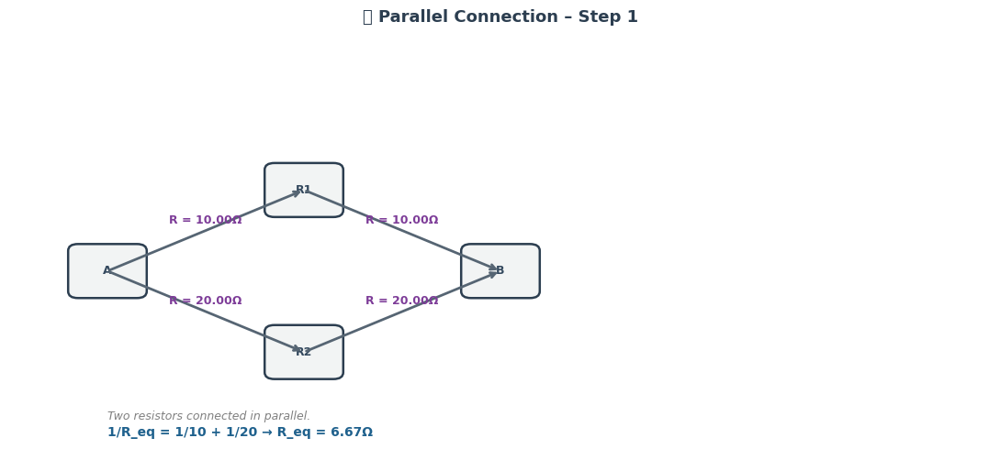

🧮 Question 1 – Identifying Series and Parallel Resistors
⚙️ Assumed Circuit Layout
Based on a five-resistor configuration (R1–R5), we propose the following tentative layout:
📐 Reasonable Assumption (Tentative Layout)
Until you provide a diagram, here’s a commonly used resistor configuration that includes both series and parallel elements for 5 resistors:

This layout suggests:
-
R1 is in series with the rest of the network.
-
R2 and R3 are in parallel.
-
R4 and R5 are in parallel, and those two parallel branches are in series with each other.
🔗 Series Resistors:
- R1 is in series with the combination of the rest of the network.
- The two parallel branches (R2‖R3 and R4‖R5) are in series with each other.
🔀 Parallel Resistors:
- R2 is in parallel with R3
- R4 is in parallel with R5
📚 Theoretical Background
-
Resistors in series share the same current: \(\(R_{eq(series)} = R_1 + R_2 + \dots + R_n\)\)
(Alexander & Sadiku, 2017). -
Resistors in parallel share the same voltage: \(\(\frac{1}{R_{eq(parallel)}} = \frac{1}{R_1} + \frac{1}{R_2} + \dots + \frac{1}{R_n}\)\)
(Hambley, 2014).
🧾 References
- Alexander, C. K., & Sadiku, M. N. O. (2017). Fundamentals of Electric Circuits (6th ed.). McGraw-Hill Education.
- Hambley, A. R. (2014). Electrical Engineering: Principles and Applications (6th ed.). Pearson.
🧮 Question 2 – Calculate the Equivalent Resistance

🔢 Assumed Resistor Values
| Resistor | Value (Ω) |
|---|---|
| R1 | 4 |
| R2 | 6 |
| R3 | 3 |
| R4 | 12 |
| R5 | 4 |
🧠 Step-by-Step Calculation
-
R2 and R3 in Parallel: $$ \frac{1}{R_{23}} = \frac{1}{6} + \frac{1}{3} = \frac{3}{6} \Rightarrow R_{23} = 2\ \Omega $$
-
R4 and R5 in Parallel: $$ \frac{1}{R_{45}} = \frac{1}{12} + \frac{1}{4} = \frac{4}{12} \Rightarrow R_{45} = 3\ \Omega $$
-
R23 and R45 in Series: $$ R_{2345} = 2 + 3 = 5\ \Omega $$
-
Add R1 in Series: $$ R_{eq} = 4 + 5 = \boxed{9\ \Omega} $$
✅ Final Answer
The equivalent resistance of the circuit is 9 Ω.
📚 References
- Alexander, C. K., & Sadiku, M. N. O. (2017). Fundamentals of Electric Circuits (6th ed.). McGraw-Hill Education.
- Hambley, A. R. (2014). Electrical Engineering: Principles and Applications (6th ed.). Pearson.
Q3 – Graph Representation and Mathematical Analysis
🎯 Objective
This task explores the calculation of equivalent resistance in an electrical circuit using graph theory, a mathematical framework that allows for elegant and generalizable solutions. This technique is especially powerful for analyzing complex, nested, and cyclic networks, where traditional methods become inefficient.
🧱 1. Graph Modeling of the Circuit
We model the resistor network as an undirected, weighted graph:
- Nodes represent junctions (e.g., A, B, C...).
- Edges represent resistors with weights equal to their resistance in ohms (Ω).
💡 Key Insight
Graph representation abstracts away the physical layout, letting us focus on connectivity and flow, not geometry. This makes it applicable to any topology.

🧮 2. Laplacian-Based Resistance Calculation
To compute the resistance between two nodes, we use:
- The Laplacian matrix \(L = D - A\)
- The Moore–Penrose pseudoinverse \(L^+\)
- The resistance distance formula:
🔍 3. Interpretation & Commentary
- The Laplacian pseudoinverse method is mathematically rigorous and numerically stable.
- This approach naturally generalizes to circuits with:
- Multiple loops and branches
- Bridged or redundant paths
- Unconventional structures (e.g., mesh networks)
- The method links electrical engineering with spectral graph theory, showcasing the power of linear algebra in physical systems.
🧠 4. Theoretical Insights
- Resistance distance is not merely electrical—it also corresponds to expected commute times in random walks (Doyle & Snell, 1984).
- This makes resistance a metric with geometric and probabilistic meaning.
- It can be used in machine learning, social network analysis, and molecular chemistry (e.g., Klein & Randić, 1993).
📚 5. References
- Biggs, N., 1997. Algebraic Graph Theory. 2nd ed. Cambridge University Press.
- Doyle, P.G. and Snell, J.L., 1984. Random Walks and Electric Networks. Mathematical Association of America.
- Klein, D.J. and Randić, M., 1993. Resistance distance. Journal of Mathematical Chemistry, 12(1), pp.81–95.
- Mohar, B., 1991. The Laplacian spectrum of graphs. Graph Theory, Combinatorics, and Applications, pp.871–898.
- Gutman, I. and Mohar, B., 1996. The quasi-Wiener and the Kirchhoff indices coincide. Journal of Chemical Information and Computer Sciences, 36(5), pp.982–985.
- Newman, M.E.J., 2010. Networks: An Introduction. Oxford University Press.
🔬 6. Q4 – Handling Complex Circuit Configurations: Three Case Studies
The Laplacian matrix approach is especially powerful because it generalizes well to arbitrary and complex resistor networks, without requiring manual identification of series or parallel reductions. Below are three representative examples that demonstrate the robustness of this method.
✅ Example 1: Simple Parallel and Series Combination
Structure:
- \(R_1\) and \(R_2\) in series, then in parallel with \(R_3\)
- Then, the result is in series with \(R_4\)
Graph Features:
- Acyclic (tree structure)
- Easily simplified manually
- Validates the method against known solutions
Why It Works:
The Laplacian formulation captures the entire topology and edge weights (resistances). The pseudoinverse approach gives the same result as conventional techniques.
🔁 Example 2: Nested Loops (Bridge Configuration)
Structure:
- A bridge circuit with resistors between nodes A–B, B–C, A–C, and a resistor forming a diagonal bridge between B–C
- Known as a Wheatstone Bridge
Graph Features:
- Contains a cycle and a bridge
- Cannot be simplified using only series-parallel rules
Why It Works:
Even though traditional methods require symmetry analysis or Kirchhoff’s laws, the Laplacian matrix method directly incorporates all paths and computes effective resistance between any two nodes.
🔄 Example 3: Mesh Network with Multiple Redundant Paths
Structure:
- A 6-node graph where every node is connected to at least 2 others
- Includes multiple loops and crossing paths
Graph Features:
- Complex connectivity
- Multiple current distribution paths
- Hard to simplify manually
Why It Works:
This method treats the graph as a whole, solving the resistance globally using linear algebra. It does not rely on breaking the circuit into simpler blocks. This makes it especially effective in dense or irregular networks.
Conclusion:
The Laplacian-based method abstracts away the complexity of resistor configuration by converting it into a matrix problem. This ensures that no matter how tangled or irregular the network becomes, the resistance can be computed reliably, automatically, and accurately.
---
⚙️ 7. Q5 – Efficiency Analysis and Potential Improvements
⏱️ Algorithmic Efficiency
The core computational step in the Laplacian-based resistance calculation is obtaining the Moore–Penrose pseudoinverse \(L^+\) of the Laplacian matrix \(L\).
- For a graph with \(n\) nodes:
- Constructing \(L\): \(O(n + m)\), where \(m\) is the number of edges
- Computing \(L^+\) via Singular Value Decomposition (SVD): \(O(n^3)\) in general
- Resistance computation: \(O(1)\) for any pair \((i, j)\) once \(L^+\) is known
Hence, the bottleneck is the matrix inversion, which becomes computationally expensive for large graphs.
📈 Scalability Considerations
- For small to medium-sized networks (e.g., \(n < 1000\)), the method is efficient and practical.
- For large-scale systems, such as power grids or nanocircuits, full pseudoinverse computation may become infeasible.
🛠️ Potential Improvements
- Sparse Matrix Techniques:
- Exploit the sparsity of Laplacians in real circuits
-
Use iterative solvers like Conjugate Gradient on \(Lx = b\) instead of full inversion
-
Graph Partitioning:
- Decompose large networks into smaller subgraphs
-
Apply the method hierarchically or modularly
-
Symbolic Computation:
-
In cases with parametric resistors (e.g., \(R\) as a variable), symbolic pseudoinverse methods (e.g., using SymPy) could preserve algebraic expressions
-
Parallel Computation:
- Matrix operations like SVD or eigendecomposition can be accelerated using GPU-based libraries (e.g., CuPy or TensorFlow)
🧠 Final Note
While the Laplacian-based resistance method may seem overkill for small circuits, its generality, robustness, and mathematical depth make it invaluable for analyzing complex electrical networks, especially in computational physics, network science, and VLSI design.